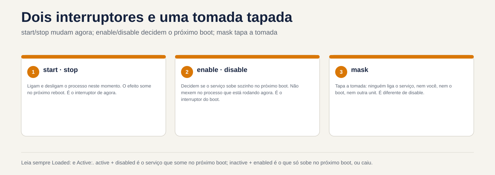
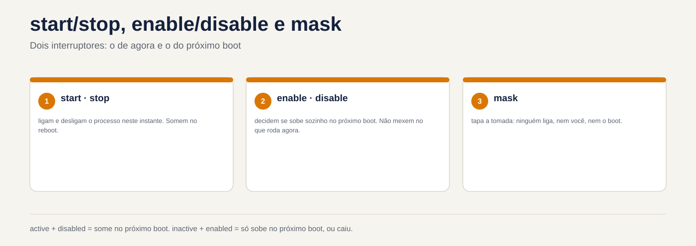

Lezione 4.2 · systemd: servizi e unità
Nella 4.1 hai visto systemd raggiungere la fine dell'avvio. Oggi lo controlli: accendilo, spegnilo, impostalo per l'avvio, impediscigli di avviarsi e modifica il comportamento di un servizio senza toccare il file del pacchetto. Quasi tutte le chiamate al server passano da qui: "il servizio si è interrotto", "non è tornato dopo il riavvio", "devo modificare un parametro". Su Windows questo è services.msc; in Linux ci sono una mezza dozzina di comandi e due directory.
Formato core. Essenziale per un'emergenza senza Internet e per il test a portata di mano. Il resto è elencato nella sezione 12, per l'inserimento in DeepTutor.
| File | lezione 4.2 |
|---|---|
| Modulo | M4 · Boot e systemd, lezione 2 di 4 |
| Quando | Settimana 8 |
| Alla fine puoi | Leggi systemctl status e separa lo stato attuale dallo stato all'avvio; avviare, arrestare, riavviare e ricaricare i servizi; abilitare, disabilitare e mascherare; scrivere un semplice file unitario; modificare un servizio con systemctl edit senza toccare il file del pacchetto; trovare la causa di un servizio che non rientra nei status e journalctl -u |
| Articoli di prova | LPIC-1 101.3 (systemctl, unità e destinazioni) · RHCSA (avvio, arresto e controllo dei servizi; configurazione dei servizi da caricare all'avvio) |
| Prerequisiti | lezione 4.1; lezione 3.5 (vim e sudoedit) |
| Tempo | Intorno all'1:30 |
| Istantanee | m4a2-start e m4a2-end in entrambe le VM |
1 · Riscaldamento
Tre domande, appena mi vengono in mente. La chiave di risposta viene visualizzata alla fine.
- Indovina: qual è la differenza tra interrompere un servizio e disabilitare un servizio?
- Hai modificato una riga nel file del servizio SSH, in
/usr/lib/systemd/system/. La settimana successiva, dopo un aggiornamento, la modifica è scomparsa. Indovina: perché? - Hai interrotto e disabilitato un servizio e poche ore dopo è di nuovo in esecuzione. Indovina: chi ha chiamato?
2 · Perché è importante
| Il cosiddetto | La risposta sbagliata | Cosa succede |
|---|---|---|
| "Ho riavviato il server e il servizio non si è attivato" | Ricomincia e chiudi il ticket | È stato avviato ma mai abilitato. Al riavvio successivo, la chiamata restituisce |
| "Ho modificato la configurazione del servizio e un aggiornamento è stato annullato" | Cambia di nuovo nello stesso posto | Il file in /usr/lib/systemd/system proviene dal pacchetto e il pacchetto lo riscrive. La modifica va in override, in /etc, con systemctl edit |
| "L'ho disabilitato ed è tornato da solo" | Disabilita nuovamente | Un'altra unità estrae questo servizio come dipendenza oppure un socket lo riattiva. Per vietare effettivamente, mask |
| "Funziona, ma non funziona" | Riavviare fino al successo | Il motivo è scritto: systemctl status mostra le ultime righe, e journalctl -u mostra tutto |
3 · Modello mentale
Ogni servizio ha due commutatori indipendenti. Il primo è da adesso:
startestopattivano e disattivano il processo in questo momento e l'effetto scompare al riavvio. Il secondo è boot:enableedisabledecidono se il servizio si attiverà da solo al prossimo avvio e non modificano il processo adesso. E c'è una terza cosa, che non è un interruttore:maskcopre il socket, e nessuno accende il servizio, né tu, né il boot, né un'altra unità.
systemctl status mostra i due interruttori su linee separate:
● relogio.service - Relogio de teste (Aula 4.2)
Loaded: loaded (/etc/systemd/system/relogio.service; enabled; preset: disabled)
Active: active (running) since ...| Linea | Cambia | Valori che vedrai |
|---|---|---|
Loaded: | Quello di avvio e da dove proviene il file | enabled, disabled, static (non c'è modo di attivarlo; un'altra unità lo tira), masked |
Active: | Cosa è adesso | active (running), active (exited) (corso e finito bene), inactive (dead), failed, activating |
Leggi sempre entrambi. active con disabled è il servizio che scompare al prossimo riavvio. inactive con enabled è il servizio che verrà attivato solo al prossimo avvio o che è caduto.


4 · Gli elementi essenziali
Units
systemd si occupa delle unità e il suffisso del nome ne indica il tipo. Quelli che usi tutti i giorni:
.service: un programma, comesshd.service..target: un gruppo di unità con un nome, comemulti-user.target..socket: una porta o socket che attiva un servizio all'arrivo di una connessione..timer: una pianificazione che attiva un servizio, come cron..mount: un assieme;systemdne genera uno per ogni riga di/etc/fstab.
Se non si scrive il suffisso, systemctl presuppone .service: systemctl status sshd è uguale a systemctl status sshd.service.
Dove risiedono i file
| Elenco | Da chi viene | Priorità |
|---|---|---|
/etc/systemd/system/ | Distinti saluti dall'amministratore | Tutti vincono |
/run/systemd/system/ | Generato in fase di esecuzione; scompare al riavvio | Media |
/usr/lib/systemd/system/ | Dal pacchetto. In Debian 12 appare anche come /lib/systemd/system/, che è lo stesso posto | La più bassa |
Regola pratica: non modificare mai /usr/lib. Quello che è tuo va in /etc. Un file con lo stesso nome in /etc sostituisce quello presente nell'intero pacchetto; una cartella NOME.service.d/ in /etc con file .conf cambia solo le righe che scrivi e il resto continua a provenire dal pacchetto. Questo è un override, o drop-in.
I comandi
systemctl status NOME # i due interruttori e le ultime righe del log
sudo systemctl start NOME # chiama adesso
sudo systemctl stop NOME # riattacca adesso
sudo systemctl restart NOME # si spegne e si riaccende: il processo è nuovo
sudo systemctl reload NOME # rilegge la configurazione senza eliminarla, se il servizio lo sa
sudo systemctl enable NOME # vai su per avviare
sudo systemctl disable NOME # non viene visualizzato all'avvio
sudo systemctl enable --now NOME # entrambe le cose contemporaneamente
sudo systemctl disable --now NOME # il contrario
sudo systemctl mask NOME # a nessuno importa
sudo systemctl unmask NOME # togliti la maschera
systemctl is-active NOME # solo quello per ora, buono per gli script
systemctl is-enabled NOME # solo quello di avvio
sudo systemctl daemon-reload # dopo aver creato o modificato un file unitE per osservare l'intero sistema:
systemctl list-units --type=service # quelli caricati adesso
systemctl list-unit-files --type=service # tutto, con lo stato di avvio
systemctl --failed # quelli che hanno fallito
systemctl cat NOME # il file e le sostituzioni, insieme
systemd-delta # tutto ciò che /etc cambia in relazione ai pacchetti
journalctl -u NOME # il registro solo per questo servizioCiò che enable fa effettivamente
enable non accende nulla. Legge la sezione [Install] del file, ad esempio WantedBy=multi-user.target, e crea un collegamento in /etc/systemd/system/multi-user.target.wants/. All'avvio, multi-user.target carica tutto in quella cartella. disable cancella il collegamento. E mask crea un collegamento dal nome del servizio a /dev/null, in /etc/systemd/system/: poiché /etc conquista tutti, il servizio diventa un file vuoto, che non può essere avviato.
Un'unità senza sezione [Install] appare come static: non può essere attivata, perché sale solo quando un'altra unità fa schifo.
Anatomia di un file di unità
[Unit]
Description=O que aparece no status
After=network-online.target # ordine: inizia solo dopo questo
Wants=network-online.target # dipendenza: trascina questo con te
[Service]
Type=simple # il processo ExecStart è il servizio
ExecStart=/usr/local/bin/programa --opcao
Restart=on-failure # se cadi per errore, rialzati
User=nobody # funziona come questo utente
[Install]
WantedBy=multi-user.target # dove abilita crea il collegamentoIl punto più confuso: After= è solo ordine, e Wants= è solo dipendenza. After= senza Wants= dice "se salgono due, salirò dopo", ma non fa salire l'altro. Wants= senza After= tira l'altro, ma salgono entrambi contemporaneamente. Li vuoi quasi sempre entrambi insieme. Requires= è un Wants= più forte: se l'altro fallisce, anche questo si ferma.
Sostituisci con systemctl edit
sudo systemctl edit NOMEAprire un editor con un file vuoto, che diventa /etc/systemd/system/NOME.service.d/override.conf. Scrivi solo quello che cambia, con l'intestazione della sezione, e quando salvi systemctl fai già daemon-reload. Manca solo restart. systemctl cat NOME mostra uno dopo l'altro il file del pacchetto e l'override. Per annullare tutto in un pacchetto di servizi, sudo systemctl revert NOME.
Due regole:
- Righe che possono apparire più volte, come
ExecStart=, somma. Per modificareExecStart, reimpostarlo prima su una rigaExecStart=vuota, quindi scrivere quella nuova. È l'interruzione della sezione 6. - L'editor è la variabile
SYSTEMD_EDITOR, oEDITOR. In Debian di solito si aprenano: Ctrl+O, Invio e Ctrl+X salva ed esci. Per utilizzarevim:sudo SYSTEMD_EDITOR=vim systemctl edit NOME.
Rocky × Debian
| Roccioso | Debian | |
|---|---|---|
| File del pacchetto | /usr/lib/systemd/system/ | /lib/systemd/system/, uguale a /usr/lib/systemd/system/ |
| Nome servizio SSH | sshd | ssh |
| Nuovo servizio appena installato | Resta fermo e disabilitato: fai enable --now | In generale, si avvia già ed è abilitato nell'installazione |
systemctl edit Redattore | Di solito è vi | Di solito è nano |
La terza riga attira molte persone: su Rocky, a dnf install non interessa affatto. Nel test RHCSA, un servizio installato e non abilitato è un punto perso nel riavvio eseguito dal broker.
Cosa è incluso nel test
Nel RHCSA: avviare, arrestare e controllare i servizi e lasciarli abilitati all'avvio. Il correttore riavvia la macchina prima della correzione, quindi tutto ciò che hai appena avviato, senza abilitare, conta come non fatto. In LPIC-1 101.3: i comandi systemctl, cosa sono un'unità e un target e dove si trovano i file.
5 · Laboratorio guidato
Eseguire ogni passaggio su entrambe le VM. Dove cambia il nome, il passo mostra entrambi.
Passo 0 · Istantanea e cartella
Sul nodo Proxmox:
qm snapshot 201 m4a2-inicio
qm snapshot 202 m4a2-inicioSulle due VM:
mkdir -p ~/lab42 && cd ~/lab42Passo 1 · Leggere un servizio già esistente
# Rocky
systemctl status sshd
# Debian
systemctl status sshTrova le due righe nella sezione 3: Loaded:, con il file e enabled, e Active:, con running. Dopo:
# troque sshd por ssh na Debian
systemctl is-active sshd
systemctl is-enabled sshd
systemctl cat sshd
systemctl list-unit-files --type=service --state=enabled
systemd-deltacat mostra da dove proviene il file, sulla prima riga, con un #. systemd-delta elenca ciò che /etc già cambia nei pacchetti: in una nuova VM l'elenco è breve. Salva il suo output, perché alla fine del lab mostrerà cosa hai modificato.
Passaggio 2 · Crea un servizio
sudoedit /etc/systemd/system/relogio.service[Unit]
Description=Relogio de teste (Aula 4.2)
[Service]
Type=simple
Environment=MSG=tique
ExecStart=/bin/bash -c 'while true; do echo $MSG; sleep 10; done'
[Install]
WantedBy=multi-user.targetsudo systemctl daemon-reload
systemctl status relogio
sudo systemctl start relogio
systemctl status relogio
journalctl -u relogio -fIl primo status mostra inactive (dead) e disabled. Dopo start, active (running), ancora disabled. journalctl -f mostra un tique ogni 10 secondi. Esci con Ctrl+C: chiude journalctl, non il servizio.
Decidi 1. relogio è in esecuzione ed è disabled. Verifica: dopo il riavvio, sarà
- a) in esecuzione
- b) arrestato
- c) mascherato
sudo systemctl rebootDopo aver effettuato nuovamente l'accesso:
systemctl status relogio| Se hai selezionato | Risultato | Perché |
|---|---|---|
| a | Sbagliato | start ora sposta solo l'interruttore. Nessuno gli ha chiesto di salire sullo stivale |
| b | Capito bene | inactive (dead), disabled. Si chiama prima riga della sezione 2 |
| c | Sbagliato | Il mascheramento avviene solo se qualcuno lo richiede con mask |
Per risolvere: start è valido fino al riavvio; enable è valido dal prossimo avvio. Nel test e nella vita, esegui entrambe le operazioni: enable --now.
Passaggio 3 · Abilita, vedi il collegamento e maschera
sudo systemctl enable --now relogio
ls -l /etc/systemd/system/multi-user.target.wants/ | grep relogio
systemctl list-dependencies --reverse relogioenable ha risposto a Created symlink ... e ls mostra il collegamento al tuo file. list-dependencies --reverse mostra chi tira relogio: multi-user.target.
Decidi 2. Seleziona: sudo systemctl mask relogio volontà
- a) maschera e
startinizia a rifiutare - b) dà errore
- c) cancella il file
relogio.service
sudo systemctl mask relogio| Se hai selezionato | Risultato | Perché |
|---|---|---|
| a | Sbagliato | Sarebbe così con un servizio a pacchetto |
| b | Capito bene | Qualcosa come Failed to mask unit: File /etc/systemd/system/relogio.service already exists. mask crea un collegamento con il nome del servizio in /etc, e il tuo file è già lì con quel nome |
| c | Sbagliato | systemctl non elimina mai il file da mascherare |
Per risolvere: mask è per i servizi a pacchetto, quelli che risiedono in /usr/lib. Per il tuo servizio, in /etc, è sufficiente disabilitare e arrestare.
Ora maschera un servizio di pacchetto che esiste in entrambe le distribuzioni e che è sempre disattivato: debug-shell.service.
Non avviare
debug-shell. Apre una shell di root, senza password, nel terminale 9 della console. Esiste per eseguire il debug del boot e per questo motivo è un buon candidato per essere mascherato.
sudo systemctl mask debug-shell
ls -l /etc/systemd/system/debug-shell.service
systemctl is-enabled debug-shell
sudo systemctl start debug-shell
sudo systemctl unmask debug-shell
systemctl is-enabled debug-shellls mostra il collegamento a /dev/null, is-enabled risponde a masked e start rifiuta con Unit debug-shell.service is masked. Dopo il unmask si ritorna al disabled. Questo è ciò che ha fatto mask, ed è per questo che start ha rifiutato senza mai eseguire il servizio.
Passo 4 · Modificare il servizio con un override
sudo systemctl edit relogioNell'editor, scrivere solo questo, nello spazio indicato dai commenti del file:
[Service]
Environment=MSG=taqueSalva ed esci. Quindi:
ls /etc/systemd/system/relogio.service.d/
systemctl cat relogio
sudo systemctl restart relogio
journalctl -u relogio -n 5
systemd-deltacat mostra entrambi i file, l'originale e override.conf. Dopo restart il log comincia a dire taque: la seconda riga Environment=MSG= batte la prima. E systemd-delta ora elenca il suo override, contrassegnato come [EXTENDED].
6 · Break and fix
The break: cambia il comando di servizio in override, nel modo che sembra ovvio.


sudo systemctl edit relogioLascia l'override in questo modo:
[Service]
Environment=MSG=taque
ExecStart=/bin/bash -c 'while true; do echo novo; sleep 5; done'sudo systemctl restart relogioLa diagnosi. restart rifiuta, con qualcosa come Unit relogio.service has a bad unit file setting. Cercare il motivo:
systemctl status relogio
journalctl -u relogio -n 20Il motivo è scritto: Service has more than one ExecStart= setting, which is only allowed for Type=oneshot services. Refusing. Il ExecStart dell'override aggiunto a quello nel file originale, e un servizio simple ne accetta solo uno.
La correzione. Aprire nuovamente l'override e reimpostare il ExecStart prima di scrivere quello nuovo:
[Service]
Environment=MSG=taque
ExecStart=
ExecStart=/bin/bash -c 'while true; do echo novo; sleep 5; done'sudo systemctl restart relogio
journalctl -u relogio -n 5Ora novo appare ogni 5 secondi.
La lezione. Quando un servizio non va su, non indovinare: systemctl status e journalctl -u quasi sempre spiegano la causa. E in un override, le righe che possono essere ripetute si sommano; per modificarne uno, è necessario prima reimpostarlo.
7 · Trappole
startsenzaenable. Funziona fino al prossimo riavvio. In RHCSA, il broker riavvia la macchina prima di applicare la patch.- Modifica il file in
/usr/lib/systemd/system/. Il successivo aggiornamento del pacchetto lo annulla. Usasystemctl edit. - Dimentica
daemon-reloaddopo aver modificato manualmente un file di unità.systemdcontinua a utilizzare la vecchia versione e avvisa.systemctl editsi ricarica già. - Cambia
ExecStart=in un override senza prima reimpostarlo. Questa è un'interruzione nella sezione 6. After=pensando che attiri l'altro servizio.After=è solo ordine; La persona che tira èWants=oRequires=.disablepensa che fosse vietato. Un'altra unità, o una presa, possono comunque collegare il servizio. Per disabilitarlo,mask.- Riavvia SSH remoto con una configurazione interrotta. Le sessioni aperte sopravvivono, ma non se ne aggiunge nessuna nuova. Prima di
restart, prova consudo sshd -t, che non risponde affatto quando tutto va bene. sshdin Debian. Lì il servizio èssh.
8 · Quiz
Rispondi senza guardare le sezioni precedenti.
systemctl statusmostraLoaded: ... disabledeActive: active (running). Cosa succede al prossimo riavvio e con quale comando risolvi il problema?- Quale file crea
enablee dove per un servizio conWantedBy=multi-user.target? - È necessario un servizio pacchetto da eseguire come un altro utente. Dove e come apportare la modifica in modo che sopravviva agli aggiornamenti?
- Qual è la differenza tra
disableemask? - Un servizio ha
After=postgresql.service, ma PostgreSQL non si avvia con esso. Perché? - Quale singolo comando fa avviare un servizio all'avvio e lo avvia anche immediatamente?
9 · Cola
Da conoscere a memoria
systemctl status NOME
sudo systemctl enable --now NOME
sudo systemctl disable --now NOME
sudo systemctl restart NOME
sudo systemctl mask NOME
sudo systemctl edit NOME
sudo systemctl daemon-reload
journalctl -u NOME
systemctl --failedE le tre idee: due interruttori (ora e avvio) e una maschera; /etc batte /usr/lib; in caso di override, la riga ripetibile viene reimpostata per prima.
Per consultare
| A | Comando |
|---|---|
| Visualizza il file e sovrascrive insieme | systemctl cat NOME |
Vedi tutto /etc modifiche nei pacchetti | systemd-delta |
| Annulla le sostituzioni da un servizio di pacchetto | sudo systemctl revert NOME |
| Elenco servizi abilitati | systemctl list-unit-files --type=service --state=enabled |
| Guarda chi tira un servizio | systemctl list-dependencies --reverse NOME |
Copiare l'intero file in /etc e modificare | sudo systemctl edit --full NOME |
| Testare la configurazione SSH prima di riavviare | sudo sshd -t |
Flashcards
starteenable: quale è valida all'avvio? →enable.- Dove va il tuo? →
/etc/systemd/system/. - Cosa crea
mask? → Un collegamento dal nome del servizio a/dev/null, in/etc/systemd/system/. staticvuoi dire? → Senza sezione[Install]: non è possibile abilitarla, un'altra unità la tira.After=tira l'altro servizio? → No, definisce solo l'ordine.- Come modificare
ExecStartin un override? →ExecStart=vuoto, poi quello nuovo. - Il servizio non va: dov'è il motivo? →
systemctl statusejournalctl -u.
10 · Checklist di uscita
- [ ] Ho letto
statuse dico adesso lo stato e lo stato del boot. - [ ] Ho creato
relogio.service, ho visto chestartnon sopravvive al riavvio e l'ho abilitato conenable --now. - [ ] Ho visto il collegamento in
multi-user.target.wantse ho capito perchémaskdirelogioha dato un errore. - [ ] Ho mascherato e smascherato
debug-shellsenza avviarlo. - [ ] Ho cambiato servizio con
systemctl edite ho visto l'override insystemctl cate insystemd-delta. - [ ] Ho trovato la causa dell'interruzione in
statusejournalctl -ue l'ho risolto reimpostandoExecStart.
Ultimo esercizio, senza guardare. Senza consultare la lezione, creare su entrambe le VM un servizio eco.service che scriva eco nel log ogni 30 secondi, abilitarlo e accenderlo con un solo comando, verificare con journalctl -u eco. Quindi modificare il messaggio in ola con un override.
Cleanup. Rimuovere i due servizi di test:
sudo systemctl disable --now relogio eco
sudo rm -r /etc/systemd/system/relogio.service.d /etc/systemd/system/eco.service.d
sudo rm /etc/systemd/system/relogio.service /etc/systemd/system/eco.service
sudo systemctl daemon-reloadRiavvia e conferenza. Riavviare entrambe le VM e verificare:
systemctl status relogio
systemctl is-enabled debug-shell
systemd-delta
systemctl is-system-runningrelogio non esiste più; debug-shell è disabled, non masked; systemd-delta ritorna alla lista del Passo 1; il sistema è running, o degraded con lo stesso motivo che avevi già notato in 4.1.
Istantanea della fine, sul nodo Proxmox:
qm snapshot 201 m4a2-fim
qm snapshot 202 m4a2-fim11 · Nella vita reale
Missione, sola lettura. Su un vero server Linux a cui rispondi, esegui semplicemente:
systemctl --failed
systemctl list-unit-files --type=service --state=enabled
systemd-deltaNon cambiare nulla. systemd-delta è il più rivelatore: mostra tutto ciò che qualcuno ha cambiato nei servizi di quel server, comprese cose che nessuno ha documentato. Annota ciò che non sapevi esistesse.
Diario. Annota: quanti servizi abilitati ha il real server; cosa ha mostrato systemd-delta; e, secondo le tue parole, la differenza tra disable e mask.
Domani, senza guardare:
- Quale comando abilita e accende contemporaneamente?
- Dov'è il file creato da
systemctl edit? - Perché un override con
ExecStart=può interrompere il servizio?
12 · Approfondisci quando vuoi
- Gli altri
Type=:forking,oneshotconRemainAfterExit=,notify, e quando ognuno ha ragione. Restart=e i limiti:RestartSec=,StartLimitBurst=, e perché un servizio che cade in un loop finisce arrestato.- Socket e timer: come un
.socketattiva un servizio e.timercome alternativa a cron. I timer ritornano nel modulo di pianificazione. - Unità modello: il
@in nomi comegetty@tty1.service. - Unità utente:
systemctl --user, senza root. - Preimpostazioni:
systemctl presete perché Rocky lascia i nuovi servizi disattivati. - Rafforzare un servizio:
ProtectSystem=,PrivateTmp=esystemd-analyze security.
In DeepTutor:
!explica a diferença entre Wants, Requires e After!feynman o que o systemctl enable faz no disco!quiz RHCSA serviços systemd, 5 perguntas
Foglio risposte commentato
Riscaldamento
- Stop si disattiva adesso e al prossimo avvio il servizio potrebbe ritornare. Disabilitare rimuove il servizio dall'avvio, ma non disattiva ciò che è in esecuzione. Questi sono i due interruttori.
/usr/lib/systemd/system/proviene dalla confezione. L'aggiornamento ha portato il nuovo file e ha sovrascritto il tuo. La modifica va in override nel/etc, consystemctl edit.- Un'altra unità che dipende da lui, oppure un
.socketche lo sveglia quando arriva una connessione.disablerimuove solo il collegamento di avvio. Per vietare effettivamente,mask.
Quiz
- Non sale al prossimo avvio.
sudo systemctl enable NOME; oppure, se è stato interrotto,enable --now. - Un collegamento in
/etc/systemd/system/multi-user.target.wants/, con il nome del servizio, che punta al file unit. - In override:
sudo systemctl edit NOME, con[Service]eUser=OUTROe poirestart. Il file va a/etc/systemd/system/NOME.service.d/override.conf, che l'aggiornamento non tocca. disabletoglie il servizio dal bagagliaio, ma tu, un'altra unità o una presa potete comunque attivarlo.maskindirizza il servizio a/dev/nulle nessuno può attivarlo fino aunmask.After=definisce solo l'ordine: se salgono entrambi, dopo va questo. Per portare PostgreSQL con sé, è necessarioWants=postgresql.serviceoRequires=postgresql.serviceoppure abilitare PostgreSQL.systemctl enable --now NOME.